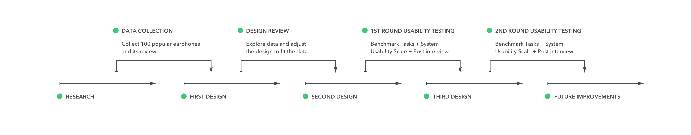

When people shop products which they are unfamiliar with, they would like to read reviews for more information. For instance, what's the key feature of the product. Or whether some features are as good as the product description. There is a need for a visualization tool to help people efficiently utilize product reviews.
I choose to focus on earphone reviews for following reasons. 1. There are various type of earphones. 2. People would like to spend time to understand earphone. And the data I use is 100 popular earphone products and their review during the end of 2017.
The target user are millennials, regardless of their education background, gender, and income. And an important assumption here is that target user have certain amount of experience with online shopping and are familiar with web applications.
The solution is AmazoningReview, a web app which allows user to: 1. Understand the oveview of popular earphones; 2. Search\filter earphones; 3. Explore how people review specific earphones; 4. Compare earphones based on reviews.
Information visualization is a process of visualizing data to help user to seek insights of data or assist user to have better communication of data. It is very important to understand the data and choose visualization form accordingly. Shneiderman categorizes data into 7 types: 1-, 2-, 3-dimensional data, temporal data, multi-dimensional data, tree data and network data2. For example, product data itself is multi-dimensional data. A possible solution for visualize such data could be a 2-dimensional scatterplot with controllers controlling other dimensions. Another alternative solution could be a multi-dimensional scatterplot.
Shneiderman introduced one of the most important design framework of interactive visualization application: The Visual Information-Seeking Mantra. The most common tasks are: overview, zoom, filter, and details-on-demand. Overview allows user see overall pictures of the entire collection. Zoom allows user to focus on details they are interested in while filter allows user filter out things they are uninterested in. Details-on-demand allows user to further explore features of a group. Shneiderman also talks about three other techniques: relate, history and extract. Relate can help user to find how an item relate to another one. History gives user control of their action by allowing they to undo or redo the action. Extract functions in the same way, helping user to save the progress of their exploration.
I did 6 semi-structured interviews to understand the process of online shopping and used user journey map to analyze the result. There are three type of users: researcher user, leisure user, follower user.
I have done three design iterations so far. The first iteration is driven by data. The second and third design iterations are driven by usability Testing.
I used three methods in the usability testing:
At the beginning of design phase I planned to extract earphone features use natural language processing. However, the result was not good enough (since I almost don't have nlp background). So I chose 5 popular earphone products, read over the reviews, manually eatracted common theme and defined the keyword list. The result was good enough to visualize the data.
AmazoningReview is a data visualization project. The goal of it is to help user efficiently utilize product review data. It is not a substitute of Amazon. However, our usability result shows that user want to filter reviews over certain features and have easy access to best/worse reviews. They also want to compare product of their choices.
{kind=link}
{kind=link}
{kind=link}
{kind=link}